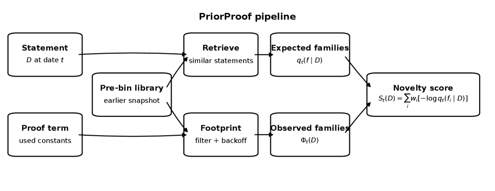
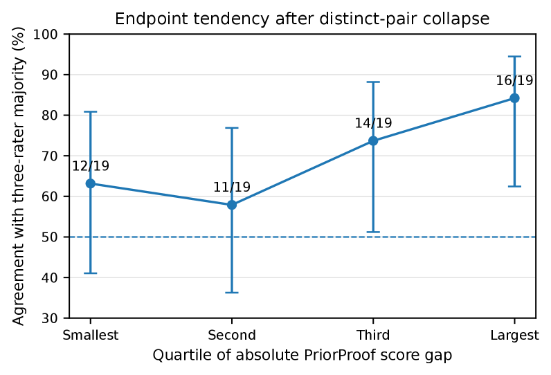

Extracts dependency footprints from elaborated Lean 4 proof terms in Mathlib and scores proof-route nonstandardness against earlier quarterly snapshots.
Abstract
Mathematicians distinguish proofs that explain, simplify, or introduce a nonstandard route, but these judgments are difficult to operationalize. We study a deliberately narrower construct: time-relative proof-route nonstandardness in formal mathematics. For a Lean theorem, PriorProof extracts the dependency footprint of its elaborated proof term and scores the weighted surprisal of that footprint under a retrieval-conditioned, hierarchically smoothed prior built only from an earlier quarterly snapshot of Mathlib. The method requires no hand-built technique ontology and no human labels: statement retrieval is learned from proof-derived contrastive pairs, while the scored object is read mechanically from proof terms. In a blinded topology study, 100 presentations collapse to 76 distinct underlying pairs: 12 canonical contrasts shown three times for consistency screening and 64 distinct stratified pairs. Against the majority of three retained domain raters, PriorProof agrees on 53/76 pairs (69.7%, Wilson 95% CI 58.7-78.9%), including 11/12 canonical pairs (91.7%, 64.6-98.5%) and 42/64 stratified pairs (65.6%, 53.4-76.1%). Score-gap quartiles are nonmonotone after repeat collapse; the endpoints are 12/19 (63.2%, 41.0-80.9%) in the smallest-gap bin and 16/19 (84.2%, 62.4-94.5%) in the largest, supporting an endpoint-calibration tendency rather than a resolved staircase. The best language-model condition agrees on 60/76 pairs (78.9%, 68.5-86.6%); on paired outcomes, PriorProof alone is correct on 8 pairs and the model alone on 15 (exact two-sided McNemar p = 0.210), so the difference is not established at this sample size. We therefore present PriorProof not as a replacement for expert or model judgment, but as a decomposable, time-anchored signal whose score gap provides an interpretable reliability indicator.
Problem
Judging whether a formal proof follows a nonstandard route relative to techniques available when it was written is hard to operationalize mechanically. Existing evaluations only ask whether a theorem is proved, not whether the proof route was expected given the earlier library.
Approach
PriorProof processes Lean 4 declarations by extracting a weighted dependency-family footprint from the elaborated proof term. It retrieves similar theorem statements from a Mathlib snapshot strictly earlier than the target's quarter and builds a hierarchically smoothed prior over dependency families. It then scores the weighted surprisal of the observed footprint under that prior, using contrastive-learned statement retrieval and no hand-built ontology or human labels.

Figure 1 : PriorProof separates what was expected from what was used . Statement-only retrieval over a pre-bin library induces a prior q_{t}(f\mid D) over dependency families, while the elaborated proof term yields an observed footprint \Phi_{t}(D) . Their weighted surprisal is the score.
Results
On a blinded topology study collapsing to 76 distinct pairs, PriorProof agreed with the three-rater majority on 53/76 pairs (69.7%), including 11/12 canonical pairs. The largest score-gap bin achieved 84.2% agreement while the smallest reached 63.2%. The best language-model condition agreed on 60/76 pairs, but the difference was not statistically established (McNemar p=0.210).

Figure 2 : Agreement with the three-rater majority by quartile of absolute score gap on 76 distinct pairs ( n=19 per bin). Error bars are Wilson 95% intervals. After repeated canonical presentations are collapsed, the interior bins are nonmonotone; the evidence is an endpoint tendency, not a resolved staircase.